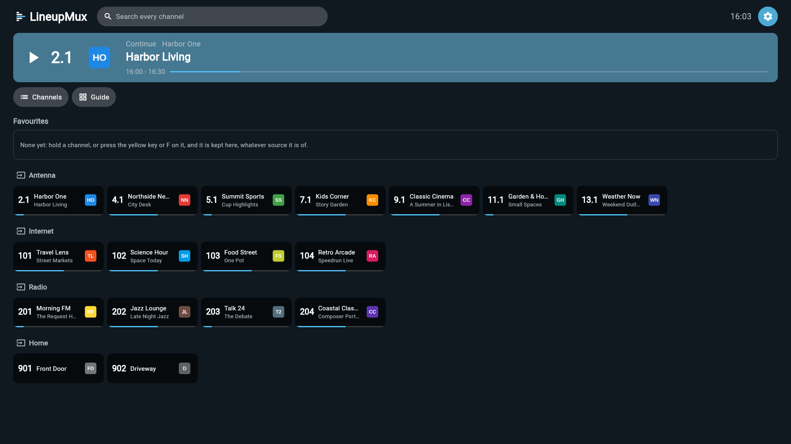
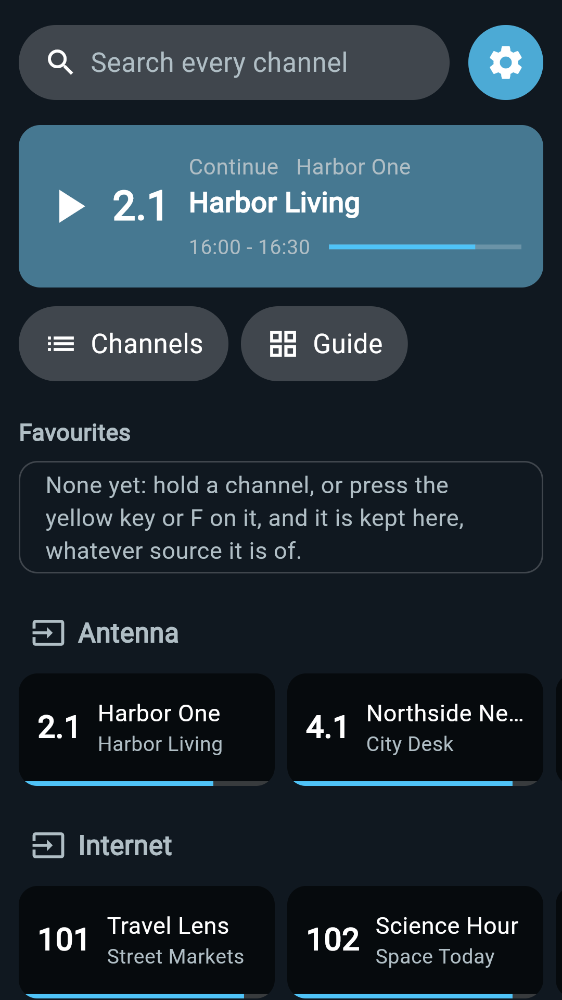
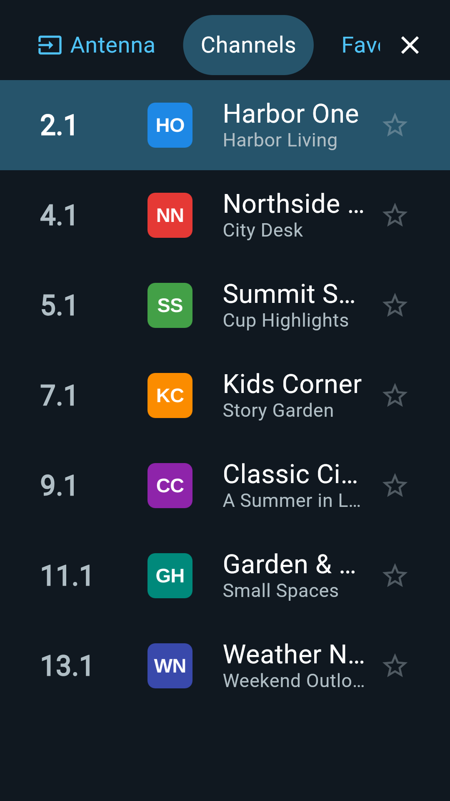
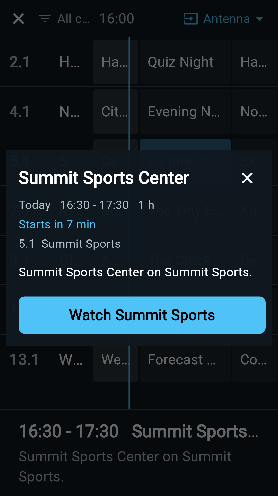
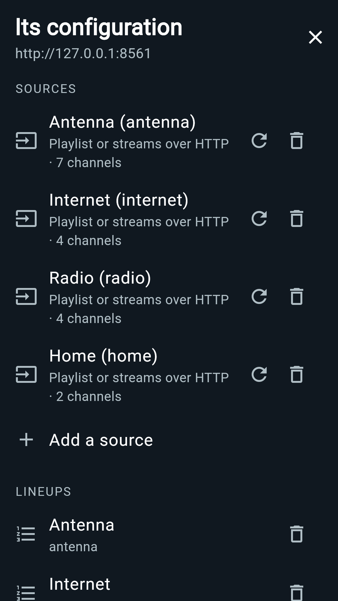

Qué hace
LineupMux toma las transmisiones en vivo que tengas y hace estaciones con ellas: un sintonizador de antena o de cable en tu red, listas IPTV, transmisiones HLS y multicast, radio por internet, una cámara en tu puerta. Cada estación lleva su número, su nombre y su logo; las mezclas de todas las fuentes en alineaciones tuyas, y las recorres con una guía de programación, con el control remoto, como televisión.
La aplicación lleva su propio servidor, así que funciona sola en el televisor, sin una computadora que configurar. Si ya tienes un servidor LineupMux en casa, se conecta a ese, o a varios a la vez.
Cualquier tipo de transmisión
- Sintonizadores en red, incluidos HDHomeRun y SAT>IP
- Listas IPTV (M3U) y transmisiones HLS, y el índice público de canales iptv-org
- Transmisiones multicast y UDP, y cámaras que transmiten por HTTP
- Radio por internet y transmisiones de solo audio, y el directorio Radio Browser
- Guías de programación de tus fuentes, o de cualquier guía XMLTV
Una transmisión que tu televisor no puede reproducir tal cual se convierte con los códecs de hardware del propio dispositivo, y solo entonces.
En Android TV

Tus alineaciones pueden ser entradas de la propia lista de canales del televisor y filas en su pantalla de inicio. Link Remote empareja un teléfono con un código corto, para manejar el televisor y configurarlo desde el sofá.
En un teléfono
Desliza para ver más →




Todas las estaciones de estas imágenes son inventadas. La aplicación está en inglés.
Privada
Sin cuenta con nosotros, sin anuncios y sin rastreo. Tus servidores, sesiones y ajustes se quedan en el dispositivo. La política de privacidad dice exactamente qué guarda la aplicación y a dónde se conecta.
LineupMux no trae canales ni contenido propio: necesitas tu propio sintonizador, lista u otra fuente, y el derecho a ver lo que transmite. Las transmisiones protegidas (DRM) no son compatibles.